Smíšená realita (AR)
AR / MR / XR — pojmy, historie, tracking a využití v praxi. Od Azumovy definice přes Google Glass a HoloLens až po ARKit, Apple Vision Pro a průmyslové aplikace.
Co je rozšířená realita
Azuma (1997): čtyři podmínky
- Kombinace reálného a virtuálního obrazu.
- Oba obrazy jsou vnímány současně.
- Interaktivita v reálném čase.
- Registrace — virtuální objekty jsou pevně ukotveny v prostoru.
Všechny čtyři podmínky musí platit současně. Přehrát video s překryvem nestačí — rozhodující je registrace: obsah musí zůstat na stejném místě, když se uživatel nebo kamera pohne.
Azuma et al. (2001) definici rozšířili o mobilní a outdoor AR — scéna už nemusí být jen v laboratoři či v interiéru, ale i venku a s sebou.
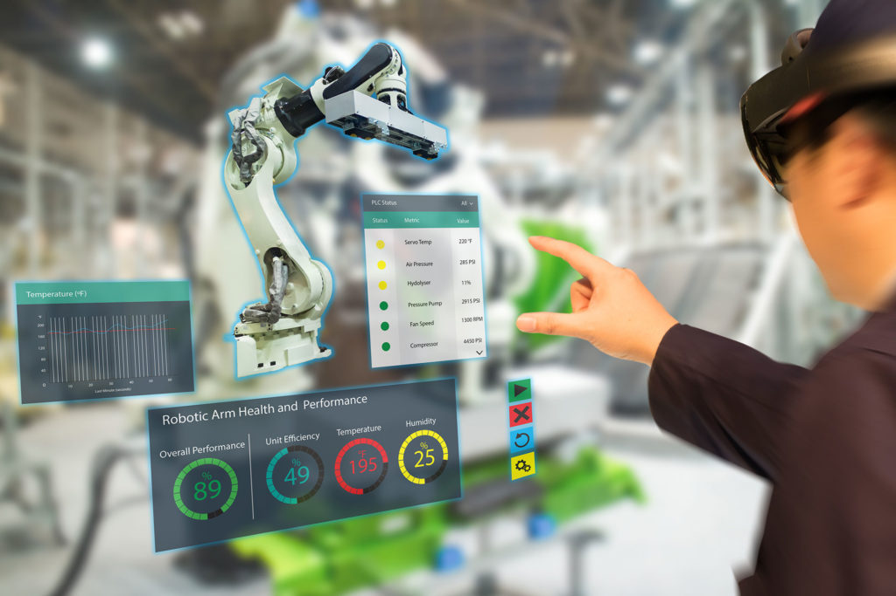
XR, AR, MR a spatial computing
XR (Extended Reality)
Zastřešující pojem pro celé spektrum od AR přes MR až po plnou VR. Společný cíl: propojit digitální obsah s fyzickým světem v reálném čase.
MR (Mixed Reality)
3D objekty jsou ukotvené ve scéně a responzivní — virtuální obsah se chová jako součást reality (překrývání, stíny, fyzika).
Spatial computing a passthrough
Interakce s technologií v 3D prostoru kolem uživatele (Apple Vision Pro, Magic Leap). Při passthrough se reálný svět zobrazuje přes kamery (video see-through), ne přes průhledné sklo — Quest 3, Vision Pro.
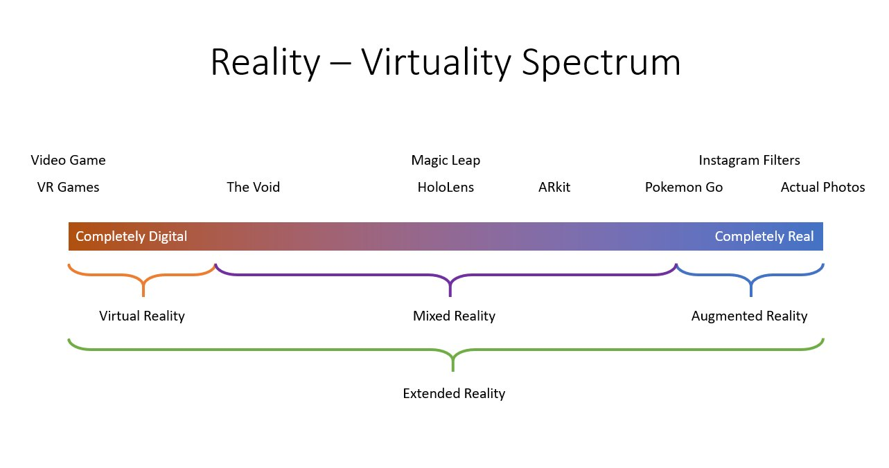
Ukázky
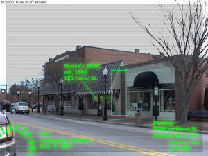
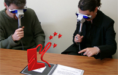
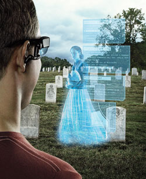
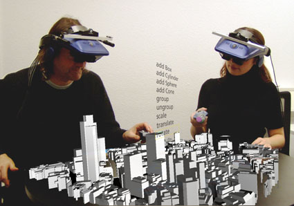
Čtyři pohledy na totéž: anotace reality, virtuální objekt na značce, virtuální postava v reálném prostoru a společná práce s modelem. AR není jedna technologie — je to způsob, jak spojit data s místem.
Kde se AR potkává s byznysem
Produktové vizualizace a reklamní kampaně.
Volební studia, přenosy, počasí, grafické vrstvy.
Pokémon GO, Wizards Unite a geolokační hry.
Shopify AR, 3D/AR objekty ve vyhledávání Google.
TikTok a Instagram filtry, AR masky.
Servis, montáže, vzdálená asistence, logistika.
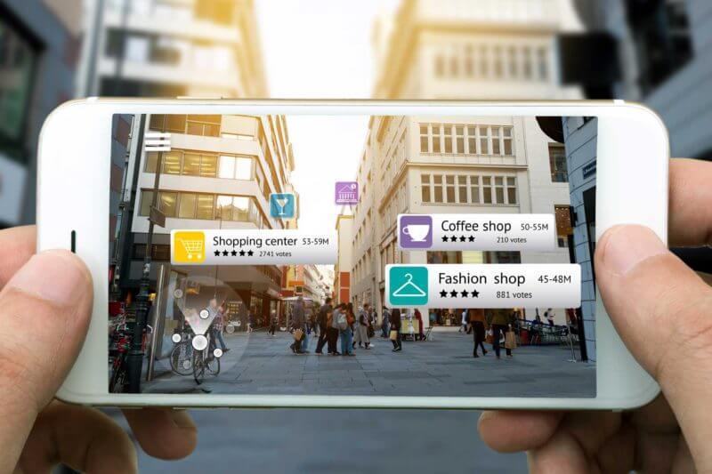
Historie: od HUD k ARToolKitu
- HUD v letadlech — head-up displej a přilbový HMD (US Air Force; F-35, 2014).
- 1990 — Boeing: AR pro zapojování kabelových svazků.
- 1992 — Louis Rosenberg: Virtual Fixtures (US Air Force), první funkční AR s vizuální i hmatovou odezvou.
- 1994 — akademický výzkum: teorie, knihovny, první demonstrace.
- 1999 — ARToolKit: open-source tracking, dostupný každému.
- 2005 / 2007 / 2009 — komerční využití, mainstream a AR v tištěných časopisech.
- 2024 — nástup VST MR: Apple Vision Pro a Meta Quest 3, masové video see-through.
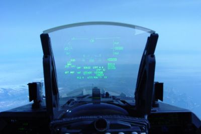
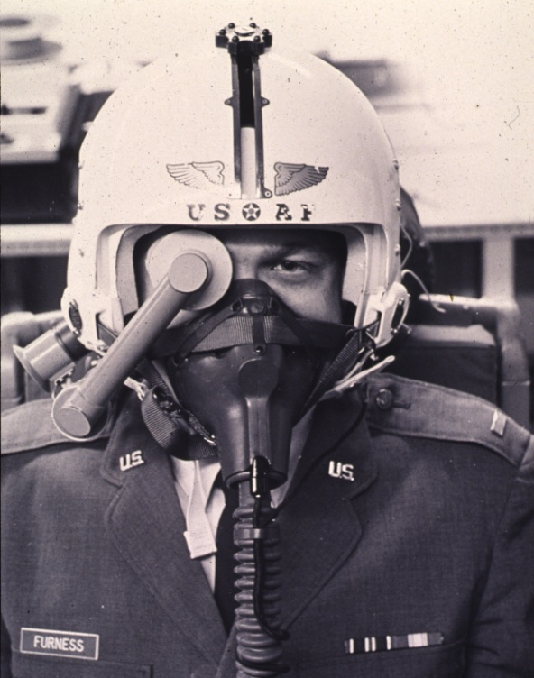
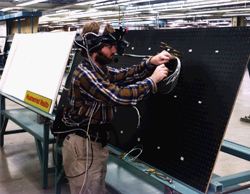
AR v prohlížeči (2008)
ARToolKit ve Flashi
- ARToolKit portováno do Flashe (2008) — AR běžela přímo ve webové stránce.
- Obří publikum: 1,6 miliardy uživatelů s nainstalovaným pluginem.
- Levný hardware — stačila webkamera a prohlížeč.
- Jednoduchý vývoj díky existujícím knihovnám a ukázkám.
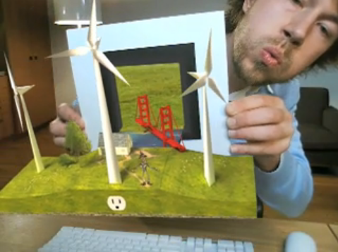
AR v mobilu (od 2005)
Potřebný hardware je součástí zařízení
Kamera, procesor, displej a senzory — telefon je kompletní AR platforma, kterou má uživatel v kapse.
Optimalizace
- Jednodušší 3D modely kvůli výkonu a spotřebě.
- Zjednodušené rozpoznávání obrazu.
- Možná spolupráce více uživatelů.
2007 — AR reklamy v tištěných médiích: telefon nasměrujete na stránku a na displeji se objeví animace nebo 3D model.
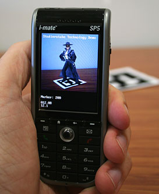
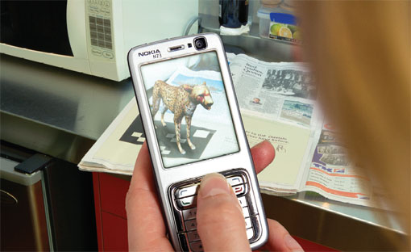
2009: informační vrstva přes realitu
AR podle polohy
- Určeno pro mobily — bez speciálního hardware.
- Poloha z GPS a kompasu, nikoli z obrazu scény.
- Aplikace: průvodci a reklama.
- Typický představitel: Wikitude.
Limit: přesnost GPS je metrová, kompas ruší okolní kov a magnetické pole. Obsah „plave“ — neumí se přichytit ke konkrétní fasádě. Přesto šlo o první masově použitelnou AR v terénu.
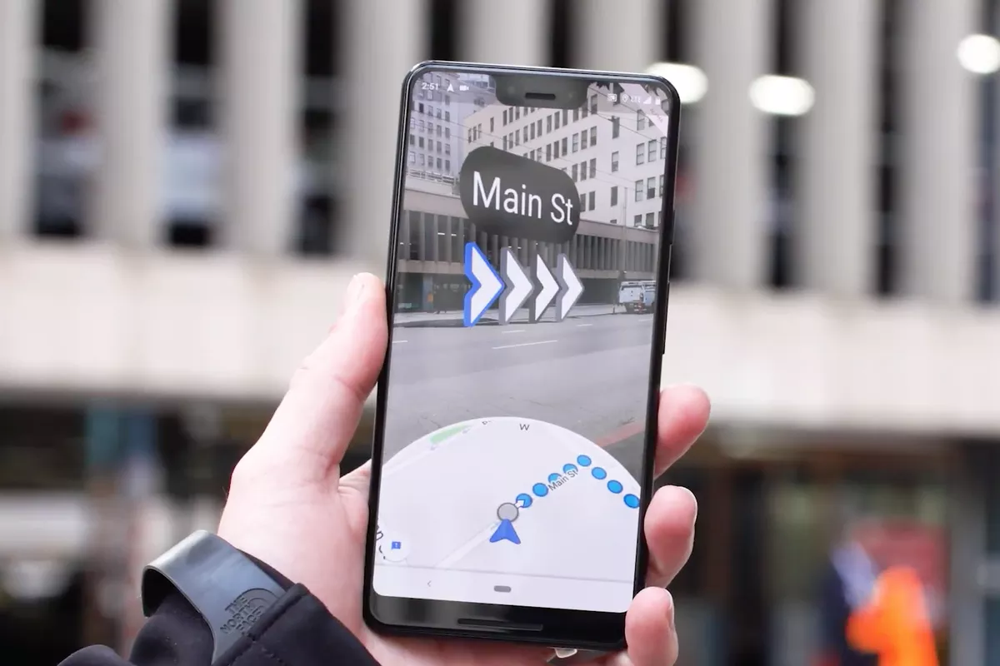
2011: Google Glass
Brýle pro smíšenou realitu
- Nahrávání videa a fotografií bez rukou.
- Malý průhledný displej v rohu zorného pole.
- Hlasové ovládání a gesta na rámečku brýlí.
Následovníci: Epson Moverio
Proč to nevyšlo u spotřebitelů
- Kamera na obličeji — obavy o soukromí a společenská nepřijatelnost.
- Malý displej, krátká výdrž, málo jasného užití.
- Chyběl ekosystém aplikací a jasný „job to be done“.
- Přežilo enterprise nasazení (výroba, logistika, výcvik).
Projekt vznikl v roce 2011, veřejně byl ohlášen 2012 a Explorer Edition se prodávala od 2013. Spotřebitelská verze skončila v roce 2015 kvůli chybějící „killer app“ a obavám o soukromí („Glassholes“); Glass Enterprise Edition (2017) a EE2 (2019) našly uplatnění v průmyslu a logistice.
2016: Microsoft HoloLens
První generace
- Integrovaný počítač s Windows — bez kabelu a PC.
- Průhledný displej (see-through).
- Kamera pro 3D skenování prostoru a mapování místnosti.
- Ovládání hlasem a gesty.
Podzim 2019: HoloLens 2
Aktuální stav: vývoj HoloLens 2 byl utlumen; Microsoft se soustředí na projekt IVAS pro armádu USA a těžiště oboru se přesouvá k passthrough headsetům.
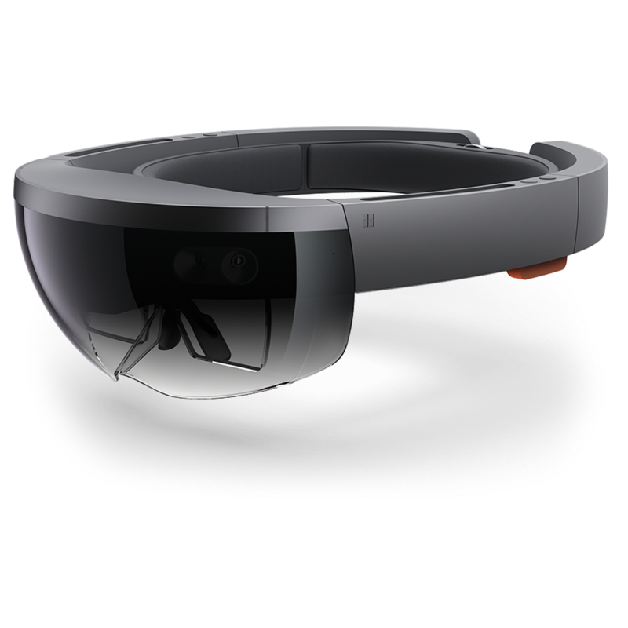
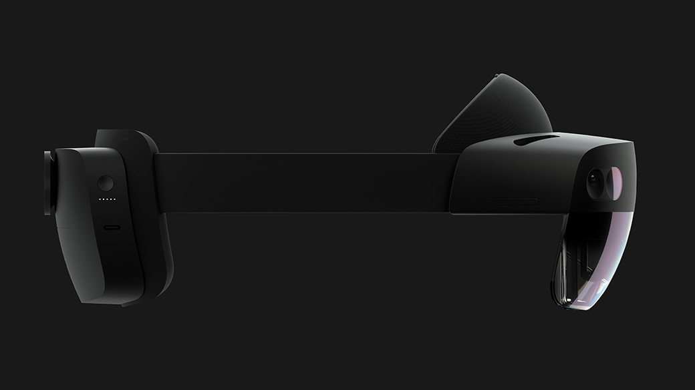
2018: Magic Leap One
Parametry
Architektura
- Výpočetní jednotka Lightpack oddělená od brýlí — kabel, ale nižší hmotnost na hlavě.
- Vlastní photonic lightfield displej a více rovin zobrazení.
- Ruční tracking, hlas a ovladač.
- Magic Leap 2 (2022/2023): dynamické stmívání (segmental dimming) — lepší kontrast AR obsahu na přímém světle.
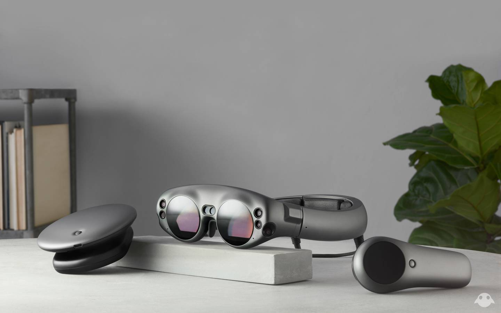
Po roce 2015: AR v mobilních aplikacích
- Snapchat – Lenses: masky a efekty sledující obličej v reálném čase.
- Facebook camera: AR filtry a 3D masky.
- Google Translate: překlad nápisů přes kameru.
- FaceApp a YouCam makeup: úpravy obličeje a virtuální kosmetika.
- Hry: AR jako herní mechanika i marketingový nástroj.
AR přestala být samostatný produkt a stala se funkcí běžné aplikace. Právě tohle ji dostalo k miliardám uživatelů.
Ray-Ban Meta Smart Glasses (2023/2024) — screenless AR: brýle bez displeje s kamerou, hlasovým asistentem a multimodální AI.
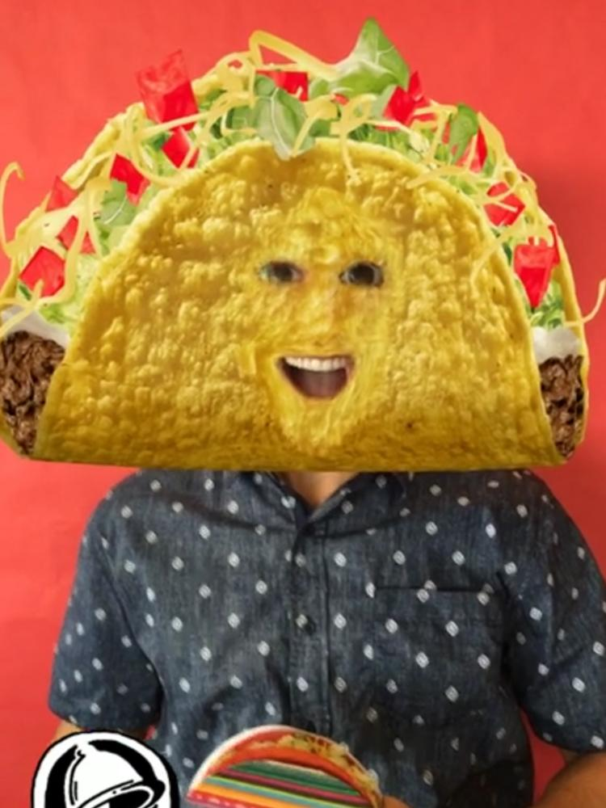
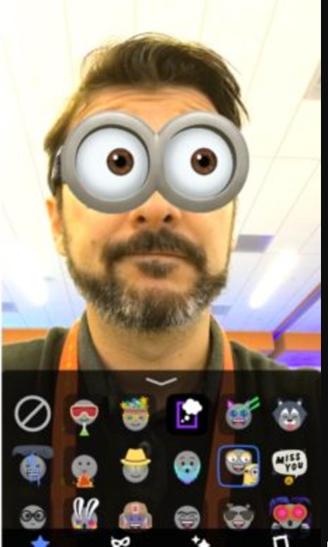
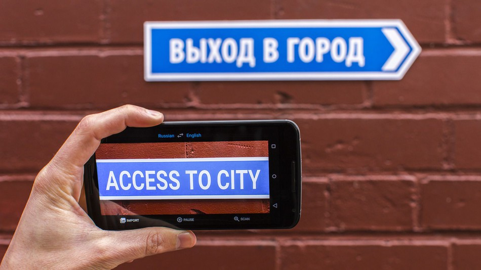
Toolkity pro smíšenou realitu
Visual Inertial Odometry (VIO)
Kamera sleduje vizuální body v obraze, akcelerometr a gyroskop měří pohyb mezi snímky. Jejich spojením systém odhaduje polohu zařízení v prostoru.
Funkce
- Detekce rovin (podlaha, stůl).
- Odhad osvětlení — virtuální objekty mají odpovídající stíny.
- Rozpoznání obličejů a předmětů.
- ARKit 3 / 6 / 7: people occlusion, scene geometry a LiDAR pro přesnější hloubku.
- ARCore: Geospatial API (data Street View) a Scene Semantics (stěny, podlaha, nábytek).
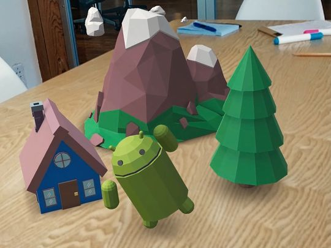
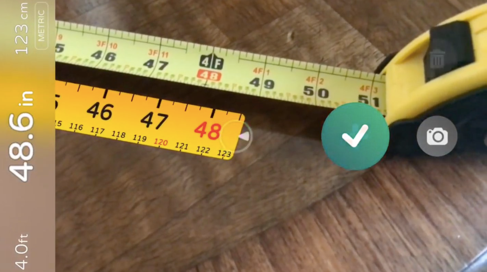
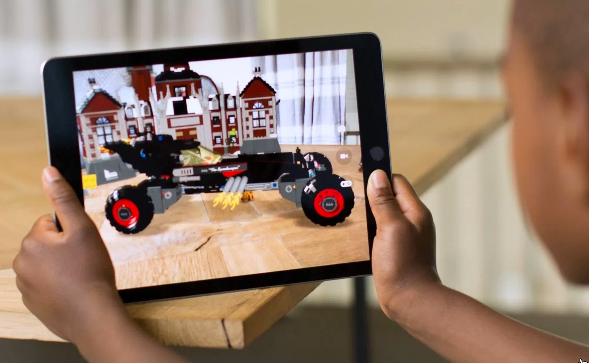
Překrývání v AR
1. Problém
Virtuální objekt musí být správně před nebo za skutečnými objekty. Bez toho dochází k prolínání a mozek iluzi okamžitě odmítne.
2. Současné řešení
Hardware depth — ToF nebo LiDAR změří hloubku přímo; neural depth ji odhadne neuronovou sítí z jedné RGB kamery. Senzory mají nízké rozlišení a na tenké objekty (prsty, dráty) často nestačí.
3. Ukázka
Niantic ukázal, jak důležitá je přesná hloubková mapa pro realistické překrývání ve venkovním prostředí.
Proč na tom záleží
Occlusion je jedním z nejsilnějších signálů hloubky. Když se virtuální objekt neočekávaně objeví přes skutečnou ruku, mozek přestane věřit, že je součástí scény. Přesné překrývání je proto důležitější než vyšší rozlišení displeje.
Co to znamená pro vývoj
- Navrhujte scénu tak, aby překrývání nebylo kritické.
- Využívejte shadow catching a odhad osvětlení.
- Počítejte s latencí hloubkových senzorů.
Slabá a silná AR
Weak AR
- Nepřesný tracking — obsah „plave“.
- Žádné informace o prostředí.
- Hlavně mobilní telefony, málo interaktivní.
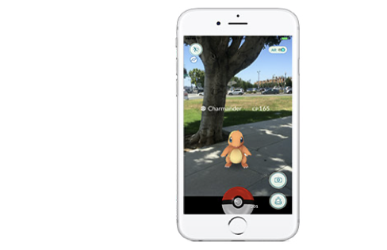
Strong AR
- Velmi přesný tracking.
- Přesná integrace do reálné scény — překrývání, stíny, osvětlení.
- Přirozená interakce rukama.
- Head-mounted display.
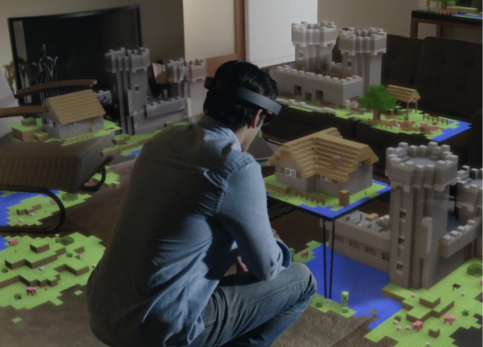
Hranice není dána zařízením, ale kvalitou registrace. I telefon může dělat silnou AR, pokud má dobrý VIO a detekci rovin; i brýle mohou dělat slabou AR, pokud tracking selhává.
AR dnes: technologie jsou dostupné
- Algoritmy pro tracking běží na běžném hardware — telefon, tablet, brýle.
- Toolkity a knihovny pro většinu kombinací hardware–OS.
- Roste využití v komerci: hry, reklamy, navigace.
Co se změnilo?
Díky mobilním čipům, kamerám a senzorům se AR stala levnou a masovou. Vstupní bariéra už není technologická, ale obsahová: chybí aplikace, které by AR používaly každý den.
| Nástroj | Platforma | Typ trackingu |
|---|---|---|
| ARToolKit | open source | markery |
| Vuforia | komerční | markery, modely, ground plane |
| ARKit | iOS | VIO, roviny, obličeje |
| ARCore | Android | VIO, roviny, hloubka |
| A-Frame | web / WebXR | podle prohlížeče |
| OpenCV | knihovna | vlastní počítačové vidění |
AR ekosystém: kdo co tvoří
Hardware
Telefony, tablety, AR brýle, hloubkové senzory, optika a čipy.
Platformy a nástroje
Operační systémy, SDK pro tracking, enginy, cloudové služby.
Obsah a aplikace
Hry, vzdělávání, průmysl, medicína, kultura, reklama.
Zdroj: The VR Fund — AR Industry Landscape, H1 2018
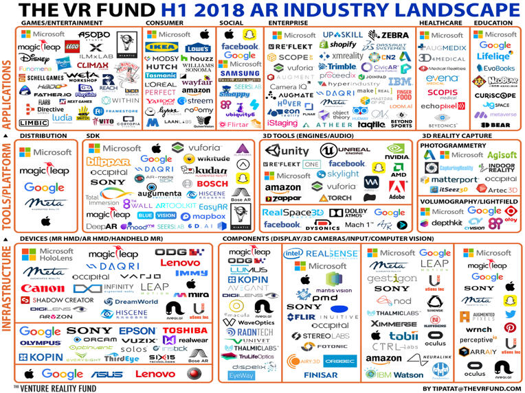
Trh rozšířené reality
Odhady trhu s AR rostou řádově — z desítek miliard dolarů na stovky miliard během deseti let. Většinu hodnoty tvoří software a služby, ne samotný hardware.
Jak číst takový graf
- Jde o predikci, ne o naměřená data.
- Různé agentury používají různé definice AR.
- Vždy si všimněte roku vydání a metodiky.
Praktické hledisko: pro rozhodování o projektu je užitečnější velikost konkrétního segmentu a ochota zákazníka platit než celkový objem trhu.
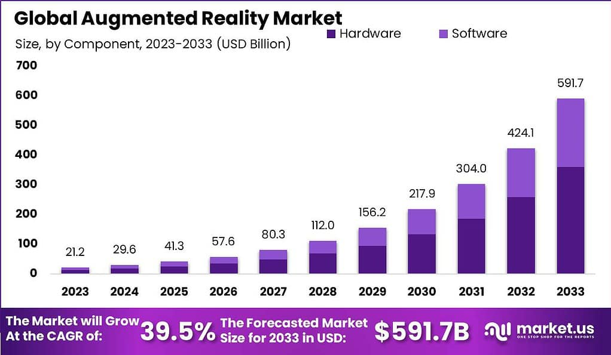
AR na křivce očekávání
AR na křivce: klíčové roky
- 2008 — vrchol nafouknutých očekávání (peak of inflated expectations).
- 2011 — propad do údolí zklamání (trough of disillusionment).
- 2018 — výstup na plato produktivity (plateau of productivity).
- Po 2018 — AR v Hype Cycle samostatně mizí a rozpadá se do kategorií: spatial computing, immersive workspace, metaverse enablers.
Pět fází: spouštěč → vrchol očekávání → propad → svah osvícení → plato produktivity. AR, VR, metaverse i AI se po křivce pohybují různou rychlostí.
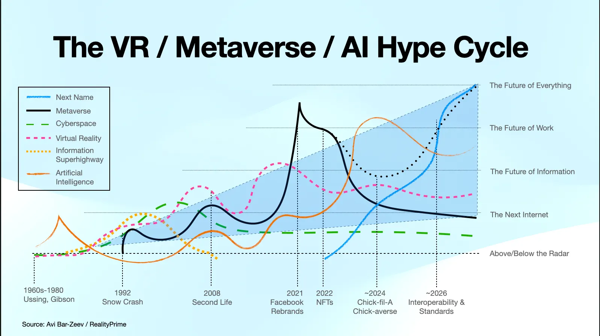
Počet uživatelů AR
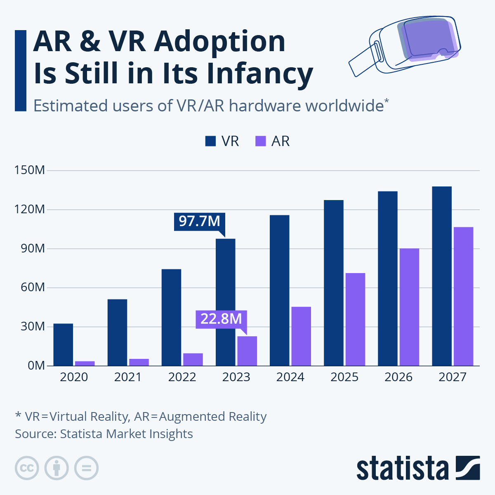
AR se stává standardní funkcí smartphonu. Uživatelská základna roste s tím, jak přibývají zařízení, filtry, navigace a nositelná elektronika.
aktivních AR zařízení (2024) — a projekce uživatelů AR + VR v roce 2030. Údaje se liší podle definice a zdroje.
Pozor na interpretaci: „uživatel AR“ dnes obvykle znamená člověka s mobilem, ne s brýlemi. Instalovaná základna headsetů je řádově menší.
Prodej hardware
AR a VR hardware teprve začíná. Většina „AR“ uživatelů dnes sedí u telefonu, ne v brýlích.
Co z grafu vyplývá
- Instalovaná základna VR roste rychleji než AR brýle.
- AR hardware zůstává nízký — chybí „killer app“.
- Cena a komfort jsou stále hlavní bariérou.
Pozor: graf zobrazuje odhad instalované základny, nikoli roční prodeje. Metodika je uvedena pod grafem.

Pokémon GO: AR jako masový hit
- Příklad mimořádně úspěšné hry — a přitom AR byla jen jednou složkou.
- Recept: značka + sociální stránka + mobil + geolokace + AR.
- Nejrychlejších 500 milionů dolarů za 63 dní.
- Akcie Nintenda +50 %.
Poučení: úspěch nezpůsobila kvalita trackingu, ale spojení známé značky, chůze venku a sociálního sdílení. AR byla katalyzátor, ne příčina.
Niantic Lightship SDK — engine vzniklý z Pokémon GO zpřístupněný vývojářům. Mrtvé hry: Wizards Unite, The Witcher: Monster Slayer; dál spíš přežívají Jurassic World Alive a Ingress.
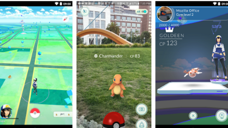
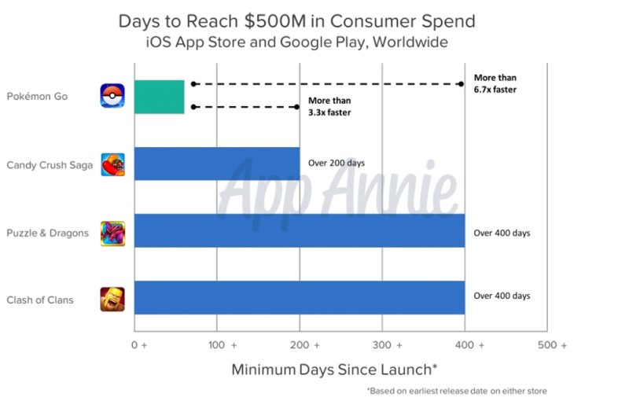
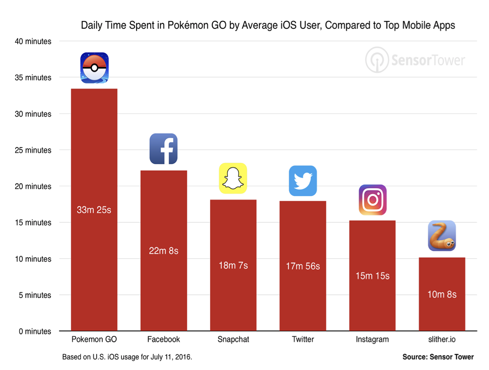
AR knihy a přirozené ovládání
VR Book (2008)
- Kniha, jejíž stránky ožívají na obrazovce.
- Kamera v lampičce — hardware je součástí prostředí, ne uživatele.
- Přirozené ovládání: otáčíte stránkou, pohybujete knihou, systém reaguje.
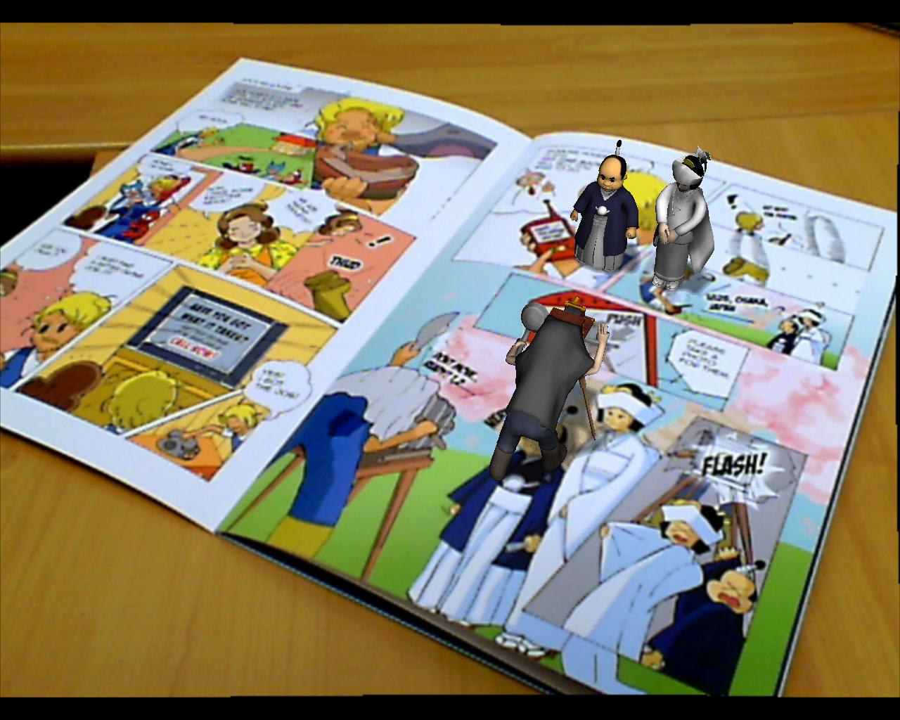
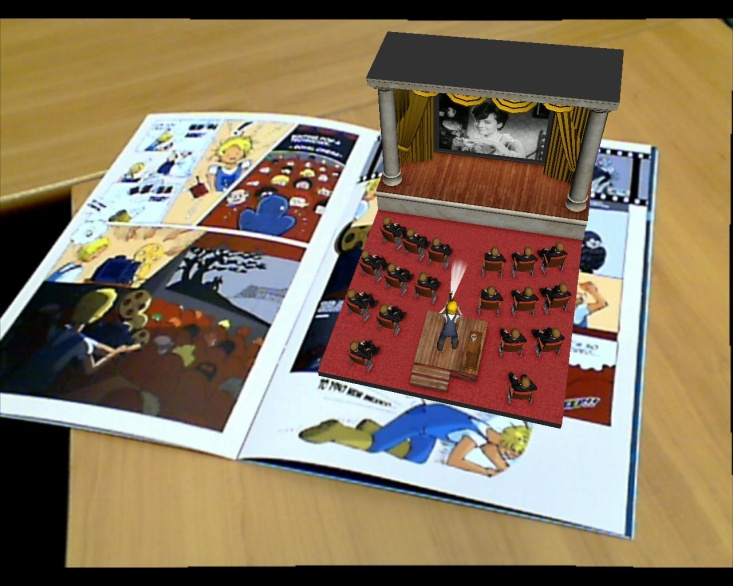
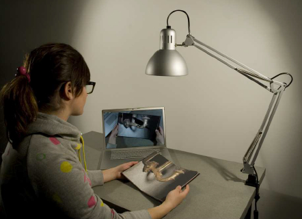
Multiplayer, komerce a reklama
Komerce a reklama
IKEA, Nike, Porsche, MakeUp App, Pepsi, Pizza Hut, L'Oréal.
WebAR: spuštění z QR kódu v prohlížeči bez instalace — 8th Wall, A-Frame, WebXR.
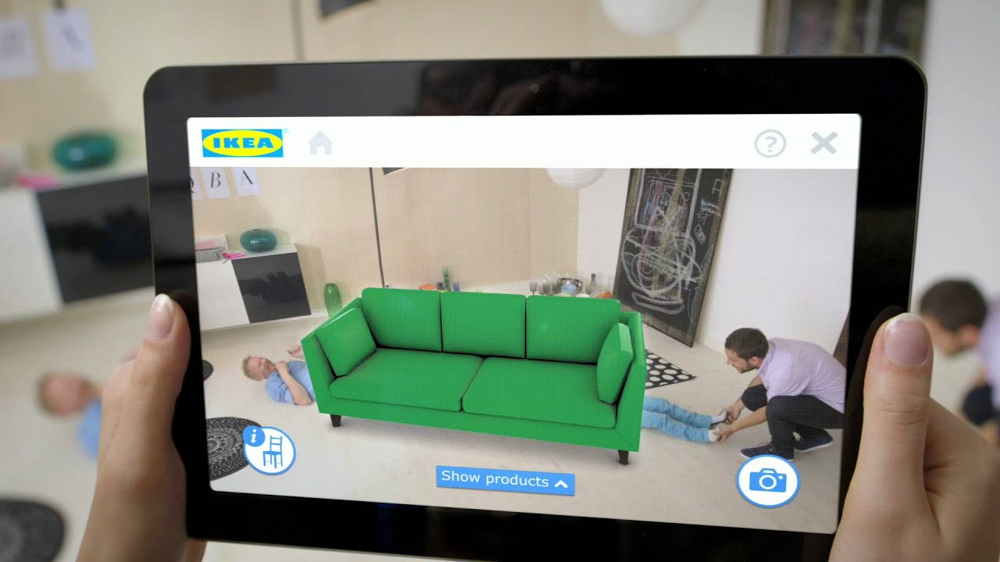
Montáž a údržba
Ngrain
- Aplikace pro školení techniků.
- Tracking na základě podoby modelu — rozpoznání hran a geometrie zařízení.
ScopeAR
- Vzdálená pomoc — expert vidí to, co technik.
- Tracking na základě rozpoznání obrazu.
- Expert kreslí anotace přímo do obrazu.
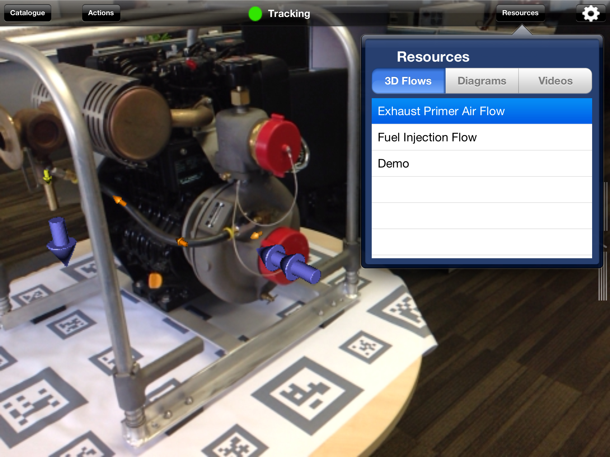
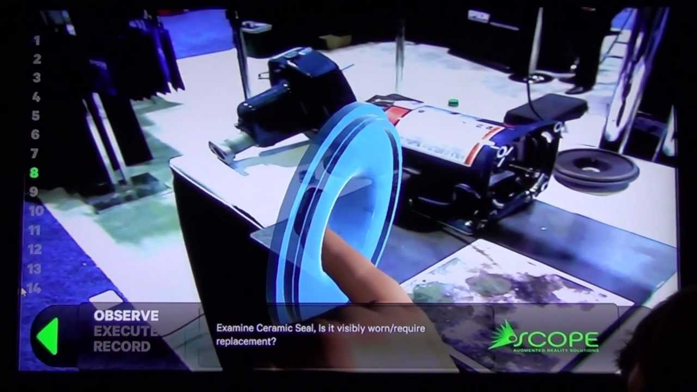
Medicína
- Průhledný displej s videem — lékař vidí pacienta i data zároveň.
- Siemens Research — překrytí snímků z CT/MRI přes tělo pacienta.
- MS HoloLens v medicíně — plánování operací a výuka.
- Augmedics xvision (schváleno FDA) — AR navigace pro operace páteře: chirurg vidí rentgenový snímek „skrz“ tělo pacienta.
- Přínos: přesnější navigace, méně invazivní postupy, lepší příprava.
Podmínky nasazení: přesná registrace vůči pacientovi, nízká latence, sterilní ovládání a ověřená přesnost. Chyba v medicíně není estetický problém.
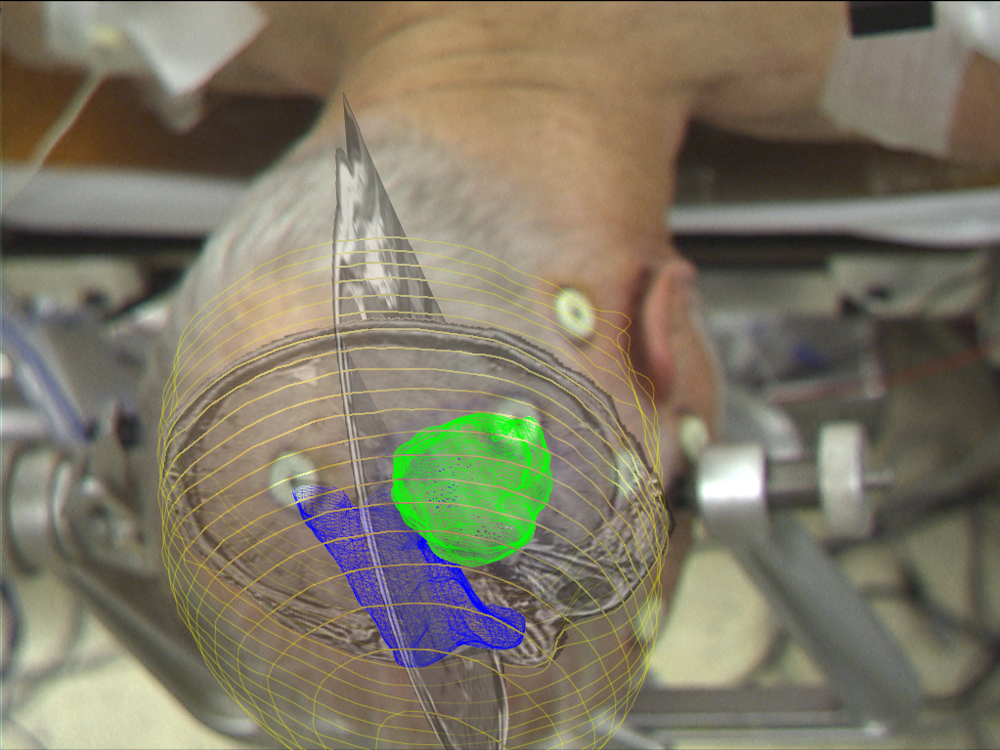
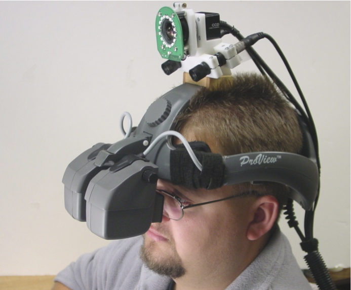
Interaktivní prohlídky a muzea
Příklady z praxe
- Virtuální Aš — historie města v rozšířené realitě.
- Věnná města českých královen — virtuální rekonstrukce historických míst.
- CityViewAR (Christchurch) — obnova města po zemětřesení prostřednictvím AR.
AR umožňuje ukázat to, co už není — zaniklé budovy, historické podoby místa nebo život v minulosti. Návštěvník přitom zůstává v reálném prostoru.
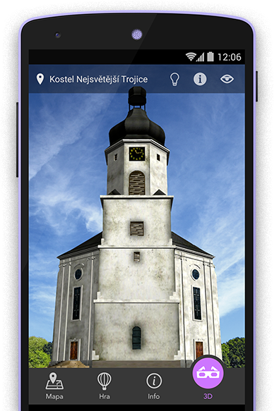
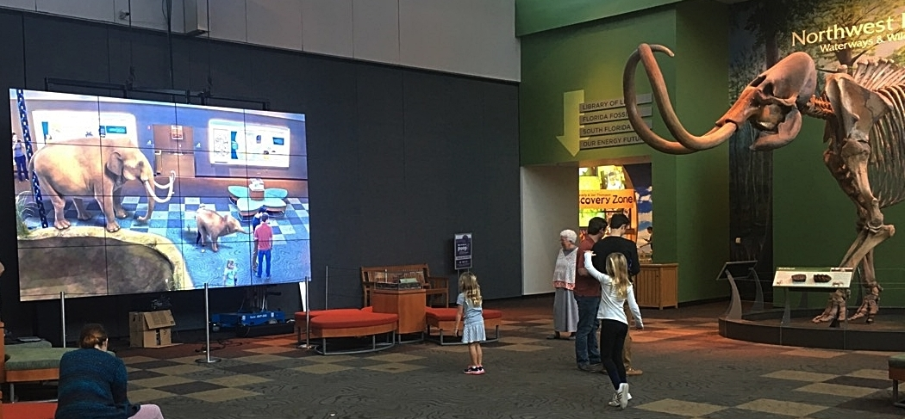
Průmysl: konstrukce, sklady, expertní pomoc
Sklady (DHL)
Pick-by-vision: brýle navádějí skladníka přímo k regálu, ruce zůstávají volné.
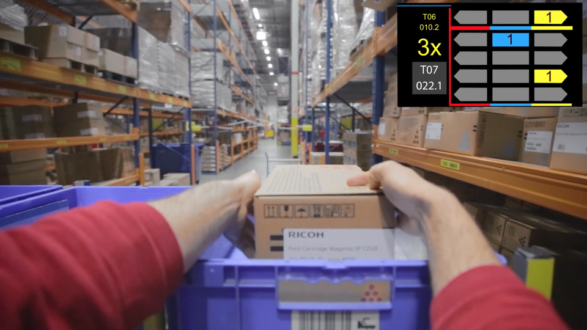
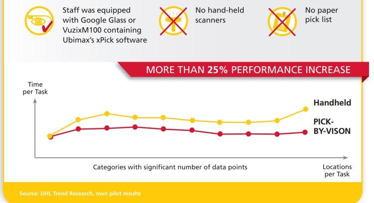
Nová vlna AR/MR (2023–2026)
Po klasických optical see-through brýlích („HoloLens éra“) přichází passthrough MR a spatial computing.
- Apple Vision Pro (2024): ultravysoké rozlišení, video see-through a ovládání eye tracking + mikrogesta (jemný pohyb prstů).
- Meta Quest 3 / Quest Pro: barevný passthrough, depth senzory a IR tracking — masově dostupné MR headsety.
- Google & Samsung — Android XR (2024/2025): otevřený ekosystém na čipu Qualcomm Snapdragon XR2+ Gen 2.
Co přinesla nová vlna?
Posun od průhledné optiky k VST přes kamery, větší zorné pole, vyšší rozlišení a ovládání bez ovladače — jeden headset zvládá AR i plnou VR.
Důsledek pro vývoj: jedna aplikace musí počítat s VST displejem, eye trackingem i klasickým ovladačem. Standardem se proto stává OpenXR.
Optical see-through vs. video see-through
Optical See-Through (OST)
- Průhledná optika — obraz se promítá přes vlnovody (waveguides) (HoloLens, Magic Leap).
- Difraktivní i reflektivní vlnovody + mikrozdroje (Micro-OLED, Micro-LED).
- Reálný svět vidíte naplno, ale černá selhává a kontrast na světle je slabý.
Video See-Through (VST)
- Svět zprostředkovávají kamery a zobrazují displeje (Quest, Vision Pro).
- Dokonalé překrytí a kontrast, plná VR i AR v jednom zařízení.
- Cena: latence, rozlišení kamer a menší přirozenost obrazu.
Rozhoduje scénář: OST pro celodenní práci venku a přímý pohled na svět; VST pro přesné překrytí, tmavé scény a jednotné AR/VR zařízení. Moderní headsety oba přístupy kombinují.
Generativní a prostorová AI v AR
- Real-time segmentace scény: SAM (Segment Anything Model) — porozumění objektům pro interakci i occlusion.
- On-device AI: převod 2D fotky na 3D mesh přímo v zařízení.
- Multimodální asistenti: Ray-Ban Meta, Google Gemini Live / Project Astra — „řekni mi, co vidíš“.
Spatial AI
Spojení porozumění scéně (hloubka, segmentace, sémantika) s jazykovým modelem. AR se stává inteligentním průvodcem reálným světem, ne jen vrstvou grafiky.
OpenXR a WebXR
OpenXR (Khronos Group)
- Otevřený standard pro cross-platform XR vývoj v Unity a Unreal Engine.
- Jeden zápis aplikace → běh na Questu, HoloLens, Vision Pro … bez vendor lock-inu.
WebXR (W3C)
- AR/VR přímo v prohlížeči (A-Frame, Three.js, Babylon.js).
- Spuštění z QR kódu bez instalace — WebAR.
Pro vývojáře: OpenXR řeší hardware, WebXR distribuci. Komerční AR se dnes běžně spouští z QR kódu v prohlížeči — bez instalace aplikace.
Prostorový zvuk (spatial audio)
Zvuk je polovina imerze — v definicích AR se o něm mluví, ale v praxi se s ním často nepracuje.
- HRTF (Head-Related Transfer Function) — model, jak hlava, trup a uši ovlivňují zvuk.
- Sluchátka lokalizují zdroj ve 3D — před, nad, vedle, vzadu.
- Zvuk ukotvuje obsah ke scéně a zvyšuje věrohodnost.
Proč je důležitý?
Bez prostorového zvuku působí AR ploše. Se zvukem uživatel vnímá směr, vzdálenost a velikost objektů a snáze zaměří pozornost — klíčové pro navigaci i imerzi.
Závěr
Využití
AR má široké využití a je dostupná na mobilech i přes WebXR v prohlížeči.
Hlavní problémy
Tracking a registrace — nejnáročnější část AR. Často se kombinuje více technologií trackování.
Současnost a výzkum
- SLAM / VIO — registrace v neznámém prostředí.
- Mobile + VST headsety — výkon a senzory.
- AI a standardy — spatial AI, OpenXR, WebXR.
- Nová vlna — Vision Pro, Quest, Android XR.
AR funguje, když je neviditelná — obsah sedí na místě, reaguje včas a dává smysl.